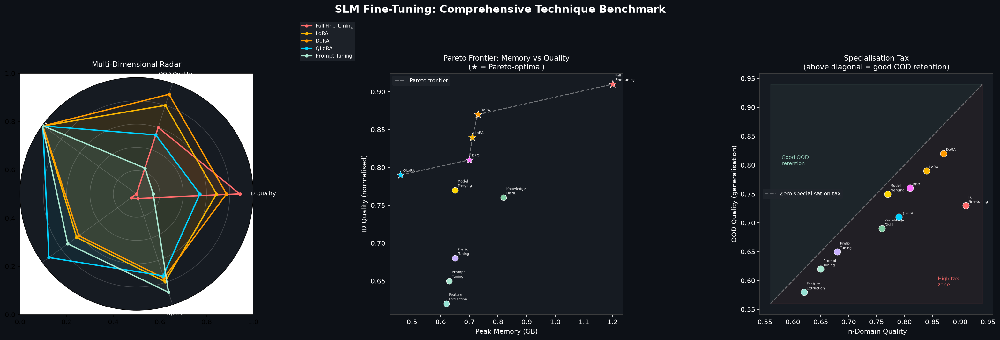

Ten techniques. Twenty runnable notebooks. Five real use cases (three of which are, technically, also fun). All of it works on a laptop. None of it requires a datacenter, a paid API, or a NeurIPS submission.
No login, no email, no free trial that becomes a paid one. Just HTML and Jupyter.
Every technique in this tutorial was run end-to-end on a laptop. Some worked beautifully. Some hit capacity walls that a 135M model just cannot climb. All results are reported as they actually happened, including the ones that made us look up how to phrase “the model produced garbage” in the passive voice.
Freeze the base, train two tiny matrices. 460K parameters instead of 135M. Almost the same quality.
LoRA plus a magnitude vector. Sometimes better, always slightly heavier. A worthwhile experiment.
Squeeze the base into 4 bits. Fine-tune on top. A 7B model now fits in 6 GB of VRAM.
Learn a handful of virtual tokens that live in embedding space. Tiny footprint, narrow benefits.
Prompt tuning, but the tokens are injected at every layer. More expressive, still very small.
Teach the model what a better answer looks like without a reward model. Preference pairs, that's it.
A big model tutors a small model. The small model learns to imitate, faster and cheaper.
Combine multiple fine-tuned models by averaging weights. Zero extra training. SLERP, TIES, DARE.
Train every parameter. The baseline everyone compares to. Also the one that eats the most VRAM.
Pick a difficulty like you would in a JRPG, except the final boss is a NaN loss curve. Each track has a runtime estimate that assumes you actually run the notebooks. Skimming is faster.
The essentials: environment, dataset design, full fine-tuning, feature extraction, and your first LoRA. Enough to have an opinion at dinner.
LoRA, DoRA, QLoRA, prompt/prefix tuning, DPO, distillation, merging. The whole parameter-efficient lineup. This is where most of the field lives now.
All ten techniques, plus safety, failure analysis, evaluation theory, industry use cases, and the Apple Silicon deep dive. When you finish, you can teach the course.
Same base model. Same evaluation set. Different techniques. Full fine-tuning wins on quality by a small margin. LoRA and DoRA get very close for about 300 times less compute. Merging comes out of nowhere with the fastest runtime because it does not train at all.

“LoRA trained an entire personality with 460,000 parameters. That is fewer parameters than a decent Wordle guess.”
Two industry-serious use cases and three that have no business existing. All five are real notebooks with honest evaluation.
Fine-tune 135M to emit structured JSON tool calls. From 10% JSON validity to 95%. Roughly 30,000 times cheaper per call than GPT-4.
SFT to install the format, DPO to reduce hallucination. Runs on-device. Zero patient data leaves the machine.
A 135M model gets a personality transplant. Some outputs contain the words “inkhorn” and “runnels” unironically.
Technical accuracy doubled after fine-tuning. The Gordon Ramsay tone required more than 135M parameters. We reported this honestly.
Two-stage SFT to DPO. Tension words up 94% over base. Adventures now include ominous breathing.
MPS internals, unified memory, MLX comparison. Measured on M4 Max, honest about where cloud GPUs still win.
The guide walks you through the beginner track first. About four hours of actual reading, depending on how much you get distracted checking the code.